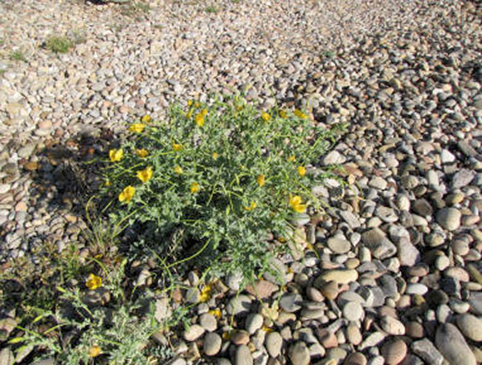
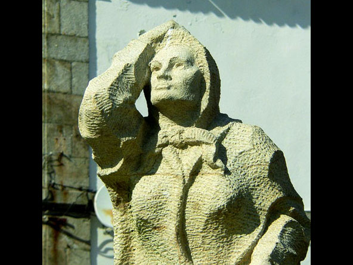

Atrás
A Guarda
-
Playa Bandera Azul de O Muíño
-

Playa Bandera Azul de Area Grande
-

Sendero Azul Litoral de A Guarda
-

Espacio Natural del Estuario del Miño
-

Desembocadura del Río Miño
-

Regeneración Dunar
-
Puntal: A Insúa y Salinas
-

Valores Naturales
-
La Costa Atlántica y los Molinos de Viento
-

El Seixal
-

Cetáreas
-
Playa O Carreiro
-
Puerto Pesquero
-

Monumentos Marineros
-
Paseo y Dique Nuevo
-
Museo del Mar: Atalaya
-
Playa Fedorento